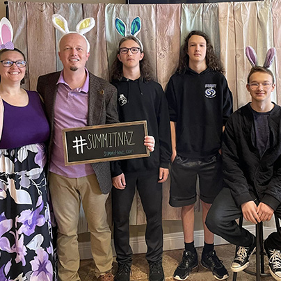
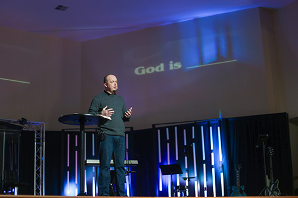

TJ is a dedicated father of three boys, a husband, the Pastor at
Summit Nazarene, the Executive Director of Ashland Community Kitchen,
and a student at Nazarene Theological Seminary.

Easter Family Photos

Preaching the Word at Summit Nazarene
Ashland Community Kitchen - Chili Fest